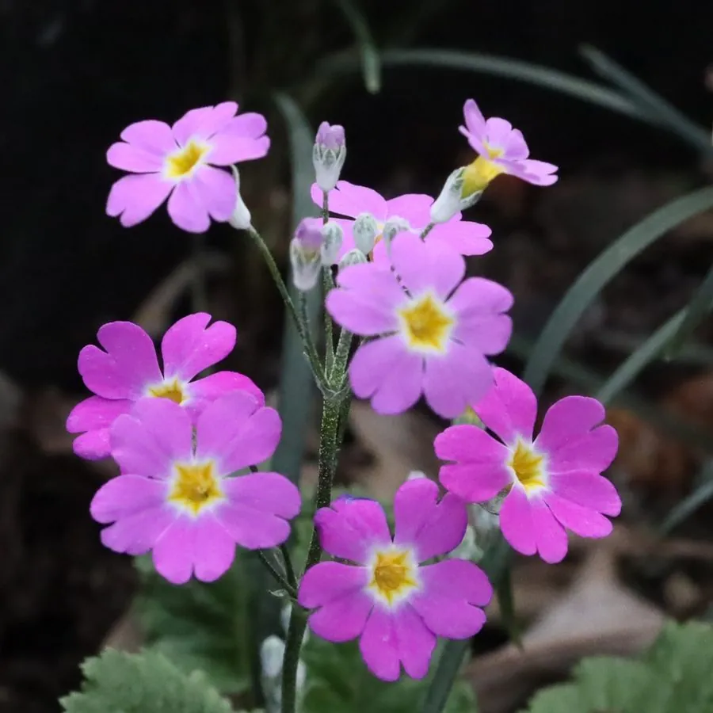

花卉与草本 · 植物界
报春花 Primula malacoides

报春花科一二年生草本，早春开花、花小而密，是中国原产的冬春观赏花卉，常作年宵花和花坛布置，又名小种樱草。
- 分类
- 门被子植物门纲木兰纲目杜鹃花目科报春花科属报春花属
- 栖息环境
- 中国西南的山地草甸与林缘，喜凉爽、湿润、半阴
- 地理分布
- 原产中国云南、贵州等地，中国西南山地为其分布中心
- 保护级别
- 暂无评估
物种志
报春花为报春花科报春花属一二年生草本，株高 20–40 厘米，茎短，全株被白色柔毛。叶片基生，卵形至长椭圆形，边缘有缺刻状锯齿。伞形花序自叶丛中抽出，通常 2–3 轮，花小而密，花冠高脚碟状，5 裂，有粉、红、白、紫等色，花期 1–4 月；果实为蒴果。
报春花原产中国云南、贵州等地，喜凉爽、湿润和半阴的环境，不耐高温和强光，适合在疏松肥沃的土壤中栽培。它开花早，常在春节前后盛开，因此得名“报春花”，是年宵花市和冬春花坛的常见花卉。报春花属种类繁多，中国西南是其分布中心；栽培以播种为主，夏季需遮阴降温，否则容易枯死。
形态与习性
- 株高20–40 厘米，全株被柔毛
- 花期1–4 月，伞形花序 2–3 轮
- 果期花后结蒴果
- 光照喜半阴散射光，忌强光
- 水分喜湿润，忌积水
- 土壤疏松肥沃、排水良好的腐殖质土
- 繁殖以播种为主
- 主要用途年宵花、冬春花坛、盆栽
趣味知识
- 报春花在春节前后开放，因此得名“报春”，是年宵花的常见品种。
- 它的伞形花序常排成 2–3 轮，小花密集、颜色柔和。
- 中国西南山地是报春花属的分布中心，野生种类非常丰富。
- 报春花怕高温强光，夏季需遮阴降温才能安全越夏。